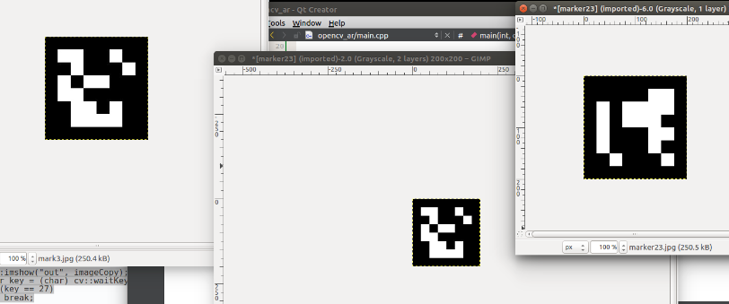

Input your code
// inputImage are declared and deleted elsewhere inputImage = new cv.Mat(height, width, cv.CV_8UC4); markerImage = new cv.Mat(); //dictionary = new cv.Dictionary(0); //dictionary.markerSize = 3; //dictionary.maxCorrectionBits = 1; //dictionary.bytesList.delete(); //// dictionary.bytesList = cv.matFromArray(1, 2, cv.CV_8UC4, [197, 71, 81, 248, 226, 163, 31, 138]); //dictionary.bytesList = cv.matFromArray(1, 2, cv.CV_8UC4, [177, 0, 135, 0, 70, 1, 112, 1]); let dictionary = new cv.Dictionary(cv.DICT_6X6_250); let parameter = new cv.DetectorParameters(); // parameter.adaptiveThreshWinSizeMin = 3, parameter.adaptiveThreshWinSizeMin = 23; // parameter.adaptiveThreshWinSizeMax = 23, parameter.adaptiveThreshWinSizeMax = 23; parameter.adaptiveThreshWinSizeStep = 10, parameter.adaptiveThreshConstant = 7; // parameter.minMarkerPerimeterRate = 0.03; parameter.minMarkerPerimeterRate = 0.1; parameter.maxMarkerPerimeterRate = 4; parameter.polygonalApproxAccuracyRate = 0.03; parameter.minCornerDistanceRate = 0.05; parameter.minDistanceToBorder = 3; parameter.minMarkerDistanceRate = 0.05; parameter.cornerRefinementMethod = cv.CORNER_REFINE_NONE; parameter.cornerRefinementWinSize = 5; parameter.cornerRefinementMaxIterations = 30; parameter.cornerRefinementMinAccuracy = 0.1; parameter.markerBorderBits = 1; // parameter.perspectiveRemovePixelPerCell = 4; parameter.perspectiveRemovePixelPerCell = 2; parameter.perspectiveRemoveIgnoredMarginPerCell = 0.13; parameter.maxErroneousBitsInBorderRate = 0.35; parameter.minOtsuStdDev = 5.0; parameter.errorCorrectionRate = 0.6; markerIds = new cv.Mat(); markerCorners = new cv.MatVector(); rvecs = new cv.Mat(); tvecs = new cv.Mat(); RgbImage = new cv.Mat(); cameraMatrix = cv.matFromArray(3, 3, cv.CV_64F, [9.6635571716090658e+02, 0., 2.0679307818305685e+02, 0., 9.6635571716090658e+02, 2.9370020600555273e+02, 0., 0., 1.]); let distCoeffs = cv.matFromArray(5, 1, cv.CV_64F, [-1.5007354215536557e-03, 9.8722389825801837e-01, 1.7188452542408809e-02, -2.6805958820424611e-02,-2.3313928379240205e+00]); // "video" is the id of the video tag let cap = new cv.VideoCapture("video"); loopIndex = setInterval( function(){ cap.read(inputImage); if (checkbox.checked) { cv.cvtColor(inputImage, RgbImage, cv.COLOR_RGBA2RGB, 0); cv.detectMarkers(RgbImage, dictionary, markerCorners, markerIds, parameter); if (markerIds.rows > 0) { cv.drawDetectedMarkers(RgbImage, markerCorners, markerIds); cv.estimatePoseSingleMarkers(markerCorners, 0.1, cameraMatrix, distCoeffs, rvecs, tvecs); for(let i=0; i < markerIds.rows; ++i) { let rvec = cv.matFromArray(3, 1, cv.CV_64F, [rvecs.doublePtr(0, i)[0], rvecs.doublePtr(0, i)[1], rvecs.doublePtr(0, i)[2]]); let tvec = cv.matFromArray(3, 1, cv.CV_64F, [tvecs.doublePtr(0, i)[0], tvecs.doublePtr(0, i)[1], tvecs.doublePtr(0, i)[2]]); cv.drawAxis(RgbImage, cameraMatrix, distCoeffs, rvec, tvec, 0.1); rvec.delete(); tvec.delete(); } } cv.imshow("canvasOutput", RgbImage); } else cv.imshow("canvasOutput", inputImage); }, 33);
start
processing
stop
Your browser does not support the video tag.
